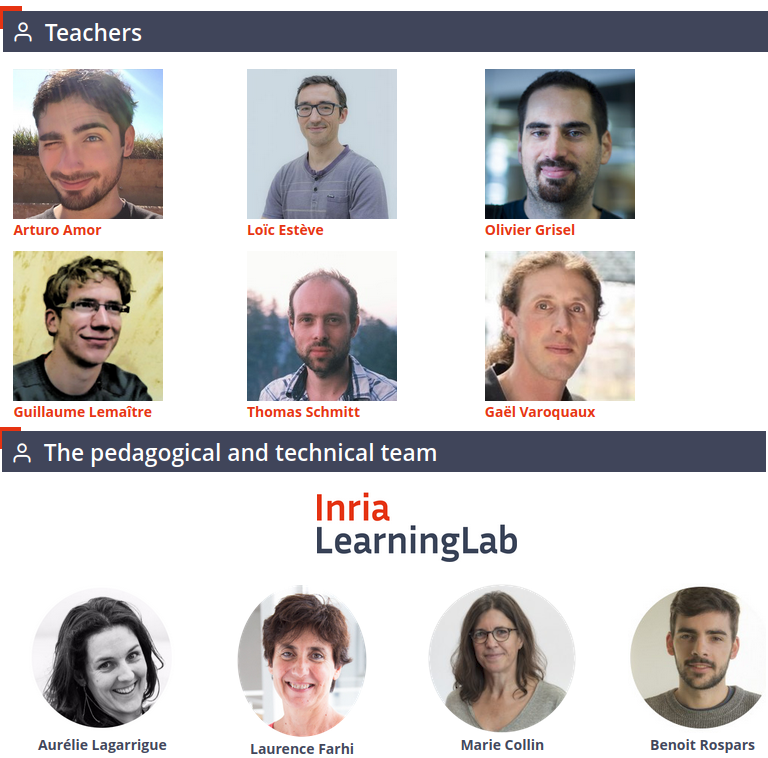
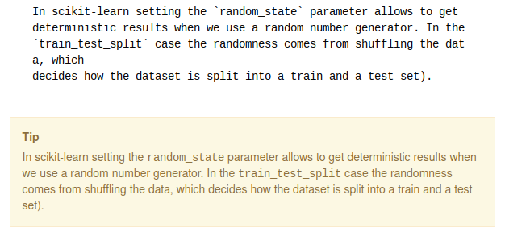
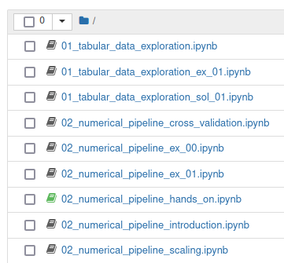
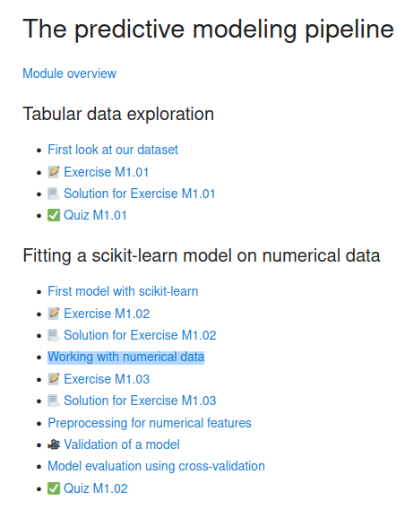
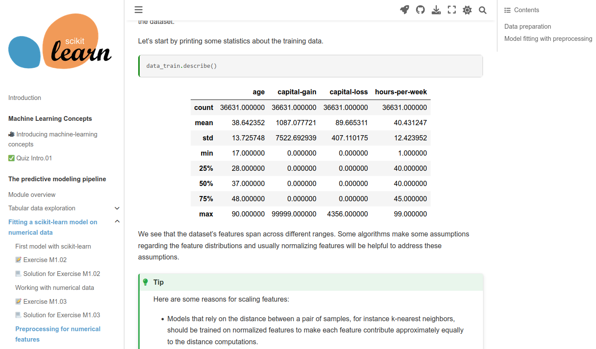
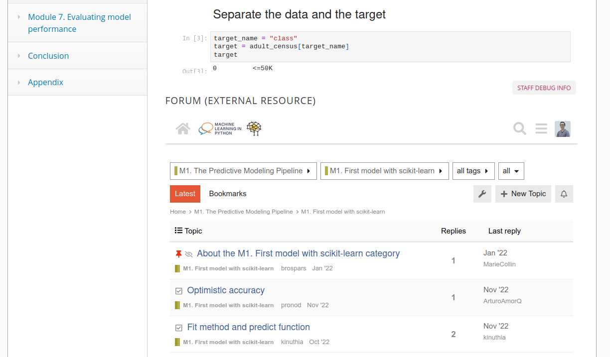

<!DOCTYPE html>
<html lang="en">
  <head>
    <meta charset="utf-8" />
    <meta name="viewport" content="width=device-width, initial-scale=1.0, maximum-scale=1.0, user-scalable=no" />

    <title>Leveraging the Jupyter ecosystem to create and run the "Machine Learning in Python with scikit-learn" MOOC</title>
    <link rel="shortcut icon" href="./favicon.ico" />
    <link rel="stylesheet" href="./dist/reset.css" />
    <link rel="stylesheet" href="./dist/reveal.css" />
    <link rel="stylesheet" href="./dist/theme/solarized.css" id="theme" />
    <link rel="stylesheet" href="./css/highlight/base16/zenburn.css" />

    <link rel="stylesheet" href="./_assets/custom.css" />

  </head>
  <body>
    <div class="reveal">
      <div class="slides"><section  data-markdown><script type="text/template"> 

<h2 style="text-align: center">
  Leveraging the Jupyter ecosystem for the "Machine Learning in Python with scikit-learn" MOOC
</h2>


<div style="text-align: center; margin-top: 5em">
<h3 style="text-align: center; margin-left: 0; margin-top: 50px">
Loïc Estève
</h3>

<code>@lesteve</code>
</div>

<div style="text-align: center; margin-top: 50px">
  
</div>

</script></section><section  data-markdown><script type="text/template">

## About me

<div class="fragment">Particle Physics background</div>
<div class="fragment step-fade-in-then-out" style="font-size: 80%">PhD main achievement: measure a cos and a sin +/- 0.8</div>

<div class="fragment">3 years in finance</div>
<div class="fragment step-fade-in-then-out" style="font-size: 80%">mainly C++ and as much Python as I could</div>

<div style="text-align: center margin-top: 120px" class="fragment">
    <div>8 years @ Inria open-source Python</div>
    
    
    
    
</div>
<div style="text-align: center margin-top: 120px" class="fragment">
    <div>Last 2 years scikit-learn MOOC and Inria Academy instructor</div>
</div>

</script></section><section  data-markdown><script type="text/template">

## MOOC = team effort



</script></section><section ><section data-markdown><script type="text/template"> 

## MOOC success in numbers

3 sessions (2-3 months long) since May 2021 <!-- .element: class="fragment" -->

~10k participants on average per session <!-- .element: class="fragment" -->

~7% participants obtain certificate  <!-- .element: class="fragment" -->
</script></section><section data-markdown><script type="text/template"> 

## Selected feed-back

> Scikit-learn creators managed to make it practice-focused and entertaining at the same time. Also, it is perfect for beginners since it starts from the basics going to more advanced level.

</script></section><section data-markdown><script type="text/template">

## Selected feed-back

> As a trainer, I really appreciate the quality of the pedagogical approach and really liked the balance between explanation (notebook oriented) and practice

</script></section><section data-markdown><script type="text/template">

## Selected feed-back

> A long time ago, I used to read Descartes, and it blew my mind that this guy literally re-framed the world with with his ideas. I think of each of you contributing to this MOOC and to scikit-learn in the same vein

</script></section></section><section ><section data-markdown><script type="text/template">

## MOOC vision

- accessible with limited requirements (basic Python knowledge, no <!-- .element: class="fragment" -->
  machine learning required)
- give intuitions without going into the maths  <!-- .element: class="fragment" -->
- CC-BY license: make it reusable as much as possible  <!-- .element: class="fragment" -->
- material reusable in different contexts: scikit-learn conference tutorials, live teaching (Inria Academy, university courses) ... <!-- .element: class="fragment" -->
</script></section><section data-markdown><script type="text/template">

## MOOC content 

- 7 modules (e.g. predictive modeling pipeline, linear models, decision trees ...) <!-- .element: class="fragment" -->
- 1-2 videos per module <!-- .element: class="fragment" -->
- mostly notebooks executed in a JupyterHub environment  <!-- .element: class="fragment" -->
- exercices with solutions (self evaluation)  <!-- .element: class="fragment" -->
- multiple-choice quizzes checking basic understanding  <!-- .element: class="fragment" -->
- one wrap-up quizz per module with coding needed <!-- .element: class="fragment" -->
  to answer questions
- ~35 hours estimated <!-- .element: class="fragment" -->

https://inria.github.io/scikit-learn-mooc <!-- .element: class="fragment" -->

</script></section></section><section ><section data-markdown><script type="text/template">

## Overview of the MOOC setup

- The setup we used to develop the content (JupyterBook,
  VSCode, jupytext, github + CI setup) <!-- .element: class="fragment" -->
- FUN MOOC platform based on OpenEdX <!-- .element: class="fragment" -->
- JupyterHub for live environment (on-prem or OVH credits, Inria Academy Benoit)  <!-- .element: class="fragment" -->
- Discourse forum (Inria Academy Benoit) <!-- .element: class="fragment" -->
- private gitlab for quizzes with solutions <!-- .element: class="fragment" -->
- Binder as backup for tricky installation issues during live teaching <!-- .element: class="fragment" -->

</script></section><section data-markdown><script type="text/template">

## Our setup for developing the material

full freedom to work the way we are used to and like 🎉

repo: https://github.com/inria/scikit-learn-mooc

- JupyterBook for material, deployed on gh-pages https://inria.github.io/scikit-learn-mooc
- .py files (easier version control), cell-by-cell execution inside VSCode
- collaboration through PRs + CI (GHA + Netlify) to browse JupyterBook HTML from PR
- jupytext to generate .ipynb for MOOC and live teaching

</script></section><section data-markdown><script type="text/template">

## Custom scripts

- [script](https://github.com/INRIA/scikit-learn-mooc/blob/main/build_tools/convert-python-script-to-notebook.py)
  to support MyST admonitions inside .ipynb, get rid of random cell ids, handle escaped dollars
  <div class="fragment step-fade-in-then-out">
    
  </div>
  
- [script](https://github.com/INRIA/scikit-learn-mooc/blob/main/build_tools/generate-index.py)
  to generate `full-index.ipynb` from `_toc.yml`, very useful for live teaching
  <div class="fragment step-fade-in-then-out">
    
    
  </div>
  
- generate exercise from exercise + solution on github repo
  <div class="fragment"></div> <!-- need this to make previous fragment disappear ... -->
- generate quizz questions on github from quizz solutions on private gitlab

</script></section><section data-markdown><script type="text/template">

## FUN MOOC integration

JupyterBook



</script></section><section data-markdown><script type="text/template">
## FUN MOOC integration

FUN MOOC


</script></section><section data-markdown><script type="text/template">

## FUN MOOC integration

manual 😢 done by Inria Academy (Laurence & Marie)

- structure: source of truth = JupyterBook <!-- .element class="fragment" -->
- most MOOC pages reuses directly the repo content: JupyterBook HTML or repo notebooks <!-- .element class="fragment" -->
- quizzes: source of truth = private gitlab <!-- .element class="fragment" -->

</script></section><section data-markdown><script type="text/template">

## Discourse forum

- Discourse is great! Important when you spend significant time in it to ask or answer questions
- impactful tweak: one forum at the bottom of each page with associated Discourse topic =>
  way easier to understand context



</script></section></section><section ><section data-markdown><script type="text/template">

## Lessons learned from running the MOOC

- useful feed-back to improve scikit-learn, e.g. cross_validate
  NaNs for all splits is now an error <!-- .element class="fragment" -->
- creating quizzes is hard, people will complain about the quizzes more than
  about confusing explanations in the notebooks, "losing points" is a strong
  motivator 😉 <!-- .element class="fragment" -->
- wrap-up quizz: making quizzes robust to small code changes is hard <!-- .element class="fragment" --> 
- using the material for live teaching is useful, high quality  <!-- .element class="fragment" --> 
  interactions + you notice a lot of things while teaching

</script></section><section data-markdown><script type="text/template">

## Lessons learned from running the MOOC

- collaborating on pedagogical material is a lot harder than on code:
  + long-distance interaction when changing something
  + reaching consensus is harder
  + tension between trying to keep things simple and not simplify too
    much/mislead, different authors => different cursors
- learn to give up early when (over-)engineering is not worth it
  + give up on links between notebooks that works in JupyterBook, in notebook
    interface and in FUN MOOC notebooks, instead use plain English "in a future
    notebook"
  + drop complicated yapf setup trying to avoid long horizontal lines

</script></section></section><section  data-markdown><script type="text/template">

## Some ideas for the future

- use Pyodide + Jupyterlite instead of JupyterHub?
  + OpenBLAS packaged in Pyodide dev and used by scipy (still some issues with Scipy)
  + scikit-learn test suites passes on Pyodide dev (xfailed tests due to Pyodide limitations)
  + JupyterLite examples in scikit-learn dev website
  <div class="fragment step-fade-in-then-out">
    
  </div>
- jupyterlab-myst supports MyST inside notebook interface (get rid of some of
  our custom scripts) <!-- .element class="fragment" -->
- need to move away from classic notebook to Retrolab first <!-- .element class="fragment" -->

</script></section><section  data-markdown><script type="text/template">

## Links

website: https://inria.github.io/scikit-learn-mooc

repo: https://github.com/inria/scikit-learn-mooc

MOOC: https://www.fun-mooc.fr/en/courses/machine-learning-python-scikit-learn/ 
</script></section></div>
    </div>

    <script src="./dist/reveal.js"></script>

    <script src="./plugin/markdown/markdown.js"></script>
    <script src="./plugin/highlight/highlight.js"></script>
    <script src="./plugin/zoom/zoom.js"></script>
    <script src="./plugin/notes/notes.js"></script>
    <script src="./plugin/math/math.js"></script>
    <script>
      function extend() {
        var target = {};
        for (var i = 0; i < arguments.length; i++) {
          var source = arguments[i];
          for (var key in source) {
            if (source.hasOwnProperty(key)) {
              target[key] = source[key];
            }
          }
        }
        return target;
      }

      // default options to init reveal.js
      var defaultOptions = {
        controls: true,
        progress: true,
        history: true,
        center: true,
        transition: 'default', // none/fade/slide/convex/concave/zoom
        slideNumber: true,
        plugins: [
          RevealMarkdown,
          RevealHighlight,
          RevealZoom,
          RevealNotes,
          RevealMath
        ]
      };

      // options from URL query string
      var queryOptions = Reveal().getQueryHash() || {};

      var options = extend(defaultOptions, {"transition":"none","controls":true,"progress":true,"history":true,"center":false,"slideNumber":false,"rollingLinks":false,"keyboard":true,"mouseWheel":false,"fragmentInURL":false,"hashOneBasedIndex":false,"pdfSeparateFragments":true,"overview":true}, queryOptions);
    </script>


    <script>
      Reveal.initialize(options);
    </script>
  </body>
</html>
